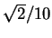
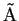
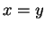

Since tetr uses the Text User Interface (TUI), it can easily be used in scripts as a general UNIX routine. This can be done by using a file with the tetr commands in the right order.
To illustrate the idea, let us consider a simple problem in which it is necessary to calculate a potential energy surface of a water molecule in which a single atom #2 (one of its hydrogens) is moved by small steps of


along the
direction in the cell. The VASP code is used. The initial geometry is contained in the file POSCAR.cm, given below:made by tetr; -> species: O H
1.00000000000000
5.00000000000000 0.00000000000000D+000 0.00000000000000D+000
0.00000000000000D+000 5.00000000000000 0.00000000000000D+000
0.00000000000000D+000 0.00000000000000D+000 5.00000000000000
1 2
Selective dynamics
Direct
0.000000000000 0.000000000000 -0.013266064393 T T T
0.152276020145 0.000000000000 0.105285414074 T T T
-0.152276020145 0.000000000000 0.105285414074 T T T
All other VASP files are the same for this calculation. Then, the following tetr commands will do a single step:
3
POSCAR.cm
O
H
M
Mv
2 2
4
0.1 0.1 0.0
S
3
POSCAR.1
Q
Q
Collect all these commands in a file inp_for_tetr. Now, if tetr is executed with this input file read in from the standart input, e.g.
tetr < inp_for_script > out, then the following will happen: first of all, the VASP input file POSCAR.cm will be read in, then a chain M
#!/bin/csh
cp POSCAR.cm POSCAR.ref
foreach step ( 1 2 3 4 5 6 7 8 9 10 )
tetr < inp_for_script > out
mv POSCAR.1 POSCAR
vasp
mv OUTCAR OUTCAR.$step
mv CONTCAR POSCAR.cm
end
mv POSCAR.ref POSCAR.cm
At the end of the calculation, the current directory will contain ten OUTCAR.1,...,OUTCAR.10 files for each point of the calculation.